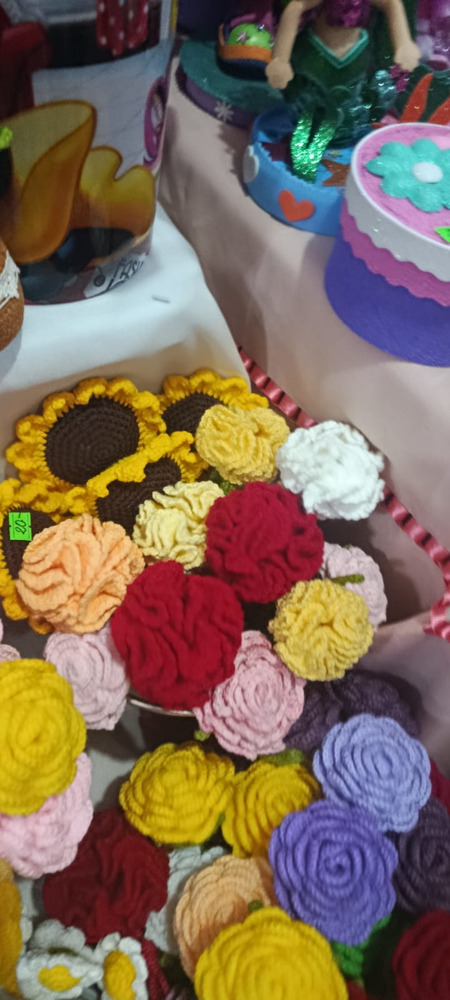
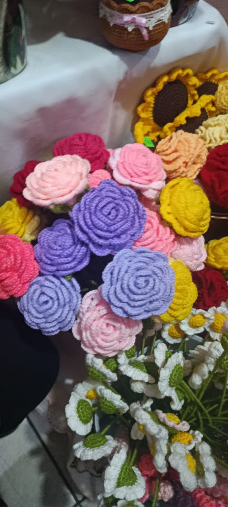
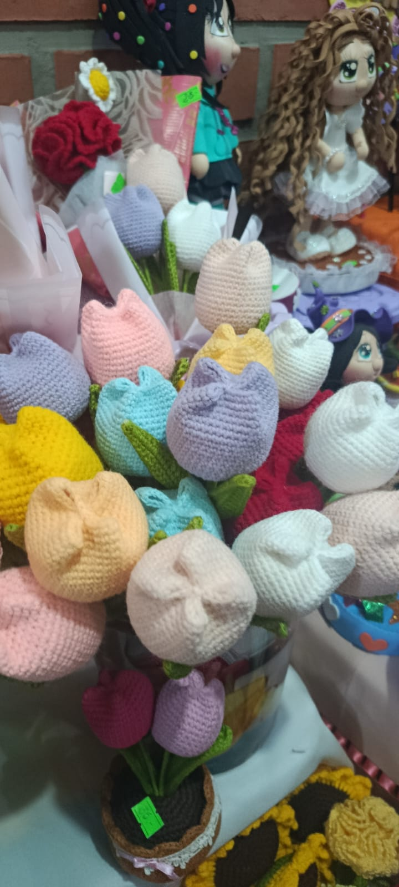

1. ¿Qué tipo de productos se presentó en este rubro?
Respuesta: Arreglos de flores decorativas y detalles artesanales para regalar o decorar.
Flores decorativas, arreglos coloridos y detalles hechos con creatividad para regalar y ambientar espacios.
Ver preguntas y respuestas ↓Flores decorativas, arreglos coloridos y detalles hechos con creatividad para regalar y ambientar espacios. Las fotografías muestran ejemplos del material recopilado durante el recorrido de la feria.







Estas preguntas resumen información relacionada con el rubro. Cuando no se contaba con respuestas registradas de una entrevista, se redactaron respuestas orientativas para completar el material.
Respuesta: Arreglos de flores decorativas y detalles artesanales para regalar o decorar.
Respuesta: El trabajo manual, la combinación de colores y la dedicación puesta en cada pieza.
Respuesta: El costo de los materiales, el tiempo de elaboración y otros gastos del emprendimiento.
Este es el texto utilizado como referencia para diseñar el logotipo de este emprendimiento.
Diseña un logotipo moderno y atractivo para un emprendimiento de flores y detalles. Incluye flores estilizadas y elementos decorativos que transmitan cariño, alegría y creatividad. Utiliza colores rosados, lilas y verdes suaves. El diseño debe ser original, fácil de reconocer y adecuado para una página web. Utiliza un fondo transparente.